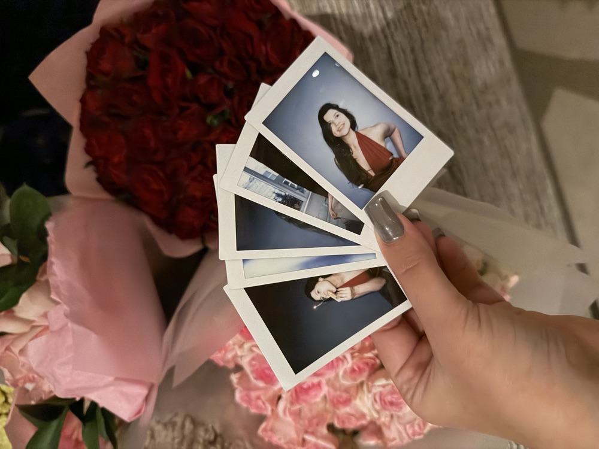
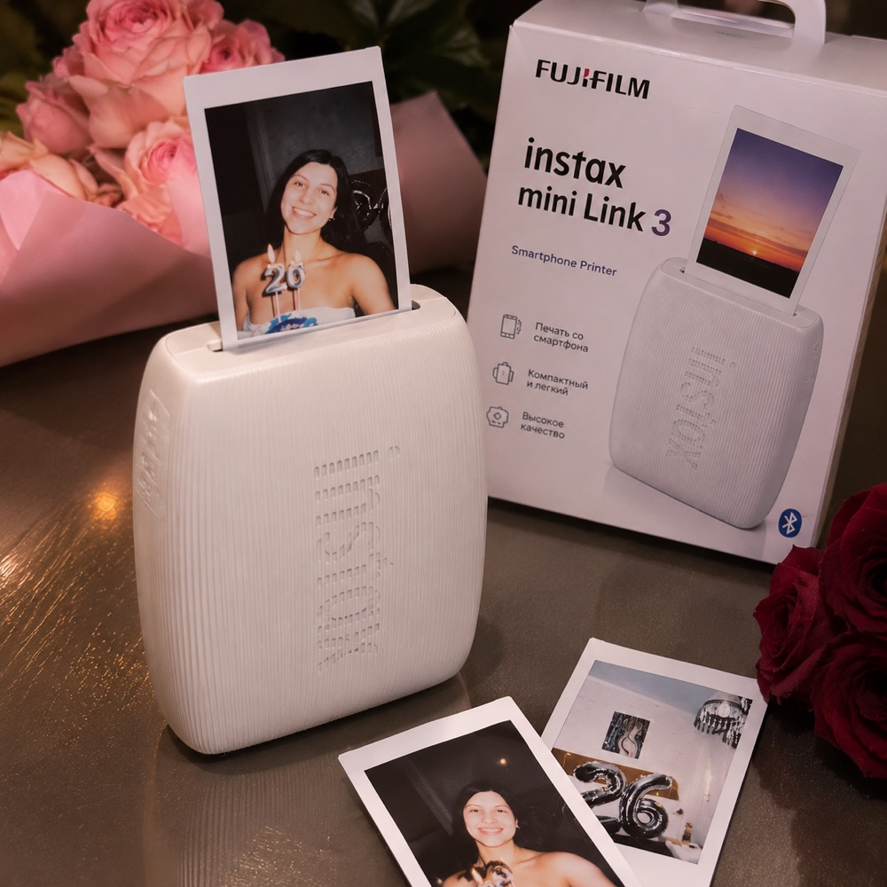
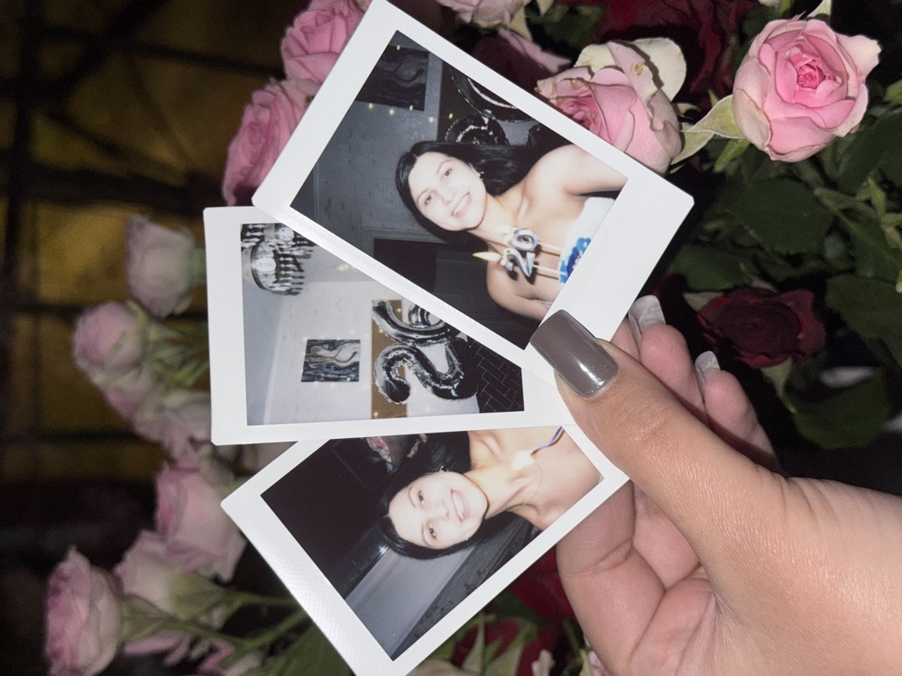

Печать фото на плёнке Instax
Пришлите снимки с телефона в мессенджер — напечатаю на фирменной плёнке Instax Mini, как полароид. От 140 ₽ за кадр: плёнка, печать и коррекция уже в цене. Самовывоз в Санкт-Петербурге или доставка.
Как заказать
Всё в переписке — быстро и без форм на сайте.
1. Напишите мне
Пишите в сообщения на Авито или в Telegram — отвечаю быстро.
2. Пришлите фото
Отправьте снимки в хорошем качестве — оригиналы из галереи, а не скриншоты из мессенджеров: так чётче.
3. Подготовлю и назову сумму
Проверю и подготовлю каждый кадр к печати, посчитаю итоговую стоимость по количеству.
4. Предоплата
Вносите предоплату — и я беру заказ в печать.
5. Забираете
Готовые фото забираете лично в Санкт-Петербурге или получаете доставкой в любой город России.
Цены
Чем больше кадров — тем дешевле каждый. Доставка оплачивается отдельно.
| Количество | Цена за фото |
|---|---|
| 1–4 фото | 180 ₽ |
| от 5 фото | 160 ₽ |
| от 10 фото | 150 ₽ |
| от 30 фото | 140 ₽ |
Подготовка и формат
Каждый кадр готовлю к печати бесплатно, чтобы снимки получились красивыми.
Готовлю к печати
Instax печатает немного темнее, чем видно на экране телефона. Поэтому каждое фото проверяю: осветляю, подправляю цвет и кадрирую, чтобы не обрезались лица. Если сомневаюсь — пришлю превью перед печатью.
Размер кадра
С рамкой — 8,6 × 5,4 см, как банковская карта. Само изображение — 6,2 × 4,6 см, вертикальное, пропорции примерно 3:4.
Можно и так
Сделаю чёрно-белое фото, добавлю подпись или дату. Напечатаю любое изображение — хоть кадр из поездки, хоть картинку.
Как получается
Реальные снимки, напечатанные на фирменной плёнке Instax Mini.



Доставка и сроки
Самовывоз и доставка
Забираете лично в Санкт-Петербурге — место и время согласуем в переписке. Или отправлю Яндекс Доставкой по городу и Авито Доставкой в любой город России, за счёт получателя.
Сроки
Обычно печатаю в течение пары часов. Срочно — напечатаю при вас на встрече. Большой заказ от 30 фото — по договорённости, обычно в тот же или на следующий день.
Упаковка
Кладу фото в плотный конверт с картоном, чтобы они не помялись и не поцарапались в дороге.
Частые вопросы
Коротко о цене, подготовке и печати.
Сколько стоит печать фото?
От 140 ₽ за фото: 1–4 штуки — по 180 ₽, от 5 — 160 ₽, от 10 — 150 ₽, от 30 — 140 ₽ за штуку. В цену входят плёнка, печать и бесплатная коррекция — без доплат.
Нужно ли готовить фото к печати?
Нет, подготовлю сама и бесплатно. Instax печатает темнее, чем видно на экране телефона, поэтому каждое фото я осветляю, подправляю цвет и кадрирую, чтобы не обрезались лица. Если сомневаюсь — пришлю превью перед печатью.
Можно напечатать картинку из интернета или скриншот?
Да, напечатаю любое изображение. Но для чёткости лучше присылать оригиналы фото из галереи, а не скриншоты из мессенджеров.
Фото проявляется сразу?
Выходит из принтера белым и проявляется за 1–2 минуты. Если печатаем при встрече — это выглядит очень красиво.
Можно напечатать горизонтальное фото?
Да, но оно будет повёрнуто или обрезано под вертикальный формат Instax Mini. Подскажу, как лучше скадрировать.
Свежая ли плёнка?
Да, печатаю на оригинальной плёнке Fujifilm Instax Mini.
Контакты
Пишите в любом удобном мессенджере — отвечаю быстро.
Напечатать ваши фото?
Пришлите снимки в мессенджер — подготовлю, назову сумму и напечатаю красивые фото на память.
Отправить фото в TelegramНужно печатать самим на празднике? Принтер Instax Mini Link 3 можно взять в аренду.